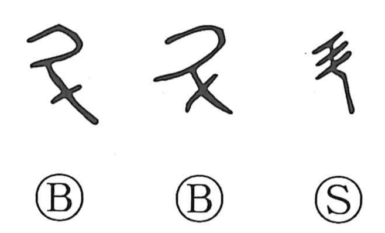

斗

Kun: | On: to
dipper ・ unit of capacity ・ big dipper ・ measure
Explanation
斗 began as a pictograph of a handled dipper or ladle. The Shuowen describes it as a pictograph with a handle and defines it as the unit equal to ten shō (with one shō about 1.8 liters). The related character 升 depicts the act of scooping with a 勺 (ladle) and became the name of the amount taken with it; 斗 then named the larger measure and, by extension, the act of measuring by the dipper, seen in terms such as 斗枡 (tomasu) and 枡 (masu) for a measuring box. Because the pattern of seven stars resembles a dipper, the constellation of the Great Bear came to be called the Great Dipper, echoing the character’s original image.